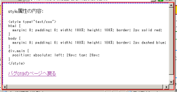

heightプロパティを%値で指定しても、親要素の高さを反映した結果にならない。body要素内にボックスがない（body要素の子孫がすべて絶対配置の場合など）に発生する可能性がある。
検証ページを参照してください。html要素とbody要素の幅と高さは100%、マージンとパディングは0に設定しています。また、body要素の子要素はすべて絶対配置です。html要素に設定したボーダーが閲覧領域内全体を囲み、body要素のボーダーがすぐ内側を囲んでいることを確認してください。
キャプチャ後に縮小しています。
WinIE6.0での表示（標準モード）
MacIE5で発生する模様。